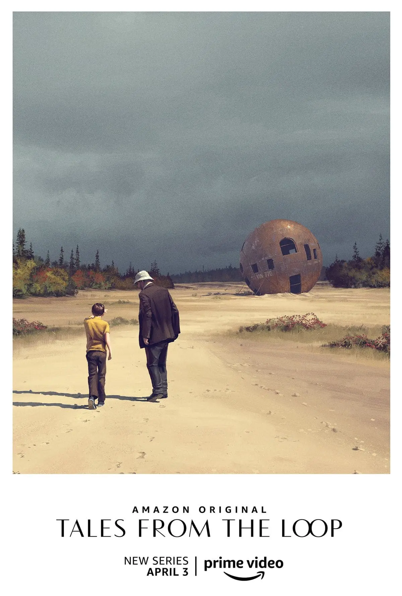

Ja sam Lana farmaceutska tehničarka i studentica grafičkog dizajna koja pokušava natjerati HTML i CSS da surađuju. Ovdje testiram dizajn, tipografiju i granice vlastitog strpljenja.
| Troškovi Interlibera | |||
|---|---|---|---|
| Naziv knjige | Autor | Status | Trošak |
| The Road | Cormac McCarthy | Kupljeno | 11,60€ |
| Slaughterhouse 5 | Kurt Vonnegut | Kupljeno | 10,60€ |
| Putovanje zvano igra | Marko Babić | Kupljeno | 19€ |
| Der Nachbar | Sebastian Fitzek | 404 Not Found | — |
| The Glass Bead Game | Hermann Hesse | ||
zlonaopako
 „Tales From the Loop“ me osvojio svojom osebujnom kombinacijom znanstvene fantastike i meditativne filozofije. Svaka epizoda ponaša se poput misaonog eksperimenta, postavljajući pitanja o prirodi vremena, identiteta i nostalgije. Vizualni identitet serije: retrofuturistički krajolici i strojevi koji izgledaju kao da su nacrtani prema starim švedskim priručnicima iz 80-ih stvara jedinstvenu atmosferu koja je istovremeno intimna i monumentalna. Rijetko koja serija uspijeva izgledati kao da pripada paralelnom svijetu, a istovremeno zadržati emocionalnu toplinu; „Tales From the Loop“ to postiže bez napora.